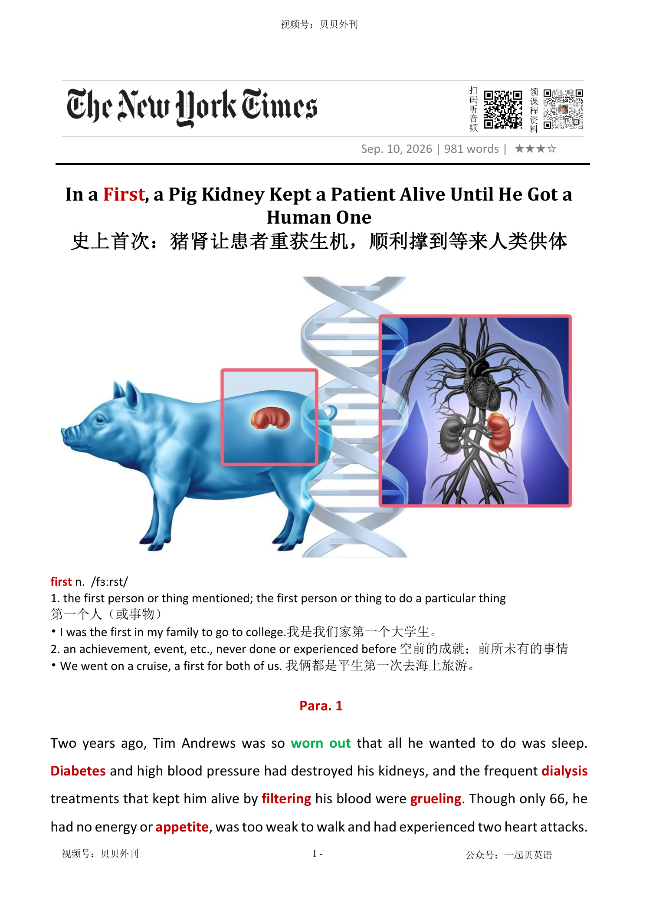

02 HEADLINE / 标题中英文解释
In a First, a Pig Kidney Kept a Patient Alive Until He Got a Human One
史上首次：猪肾让患者重获生机，顺利撑到等来人类供体
first
第一个人（或事物）
1. the first person or thing mentioned; the first person or thing to do a particular thing
In a First, a Pig Kidney Kept a Patient Alive Until He Got a Human One
史上首次：猪肾让患者重获生机，顺利撑到等来人类供体
第一个人（或事物）
1. the first person or thing mentioned; the first person or thing to do a particular thing文章讲述美国患者蒂姆·安德鲁斯接受基因编辑猪肾移植、靠它维持生命九个月，随后又成功等到人类供体肾脏的医学案例。
开头先呈现他的绝境：糖尿病和高血压摧毁肾脏，透析让身体极度虚弱，而罕见血型又让匹配人类肾源的机会非常渺茫。
当他得知医生正在尝试猪肾移植时，选择主动参与实验，希望即使自己可能失败，也能为医学进步留下数据。
中段解释这项案例的意义：猪肾目前还不是永久替代方案，但可能成为等待人类肾脏期间的“桥梁”，既维持生命，也让患者暂时摆脱透析。
文章进一步说明这些猪肾经过多重基因编辑，以降低排异反应、灭活猪基因组中的病毒；更关键的是，安德鲁斯的经历显示猪肾不会破坏后续人类肾移植的免疫匹配。
后半部分把个案放入异种移植的发展背景：基因工程、克隆和抗排异药物推动该领域快速进步，eGenesis 和其他公司正准备更大规模的人体临床试验。
结尾回到患者本人：猪肾最终因血栓受损被摘除，但他随后成功移植人肾，身体状况改善，重新游泳、划皮艇、骑车，并以更珍惜生命的方式生活。
全文核心是：猪肾移植还未彻底改写器官短缺问题，但它已经证明，异种器官或许能成为肾病患者通向真正移植机会的一座桥。
The article tells the story of Tim Andrews, a man with serious kidney disease. Diabetes and high blood pressure had destroyed his kidneys.
Dialysis kept him alive, but it made him very tired and weak. He also had a rare blood type, so it was very hard for him to get a matching human kidney.
Then Andrews heard about doctors who were transplanting kidneys from genetically modified pigs. He contacted them and agreed to take part.
He said that if he was going to die, he wanted to do something useful for humanity. In January 2025, he received a pig kidney and lived with it for nine months.
This case is important because the pig kidney worked as a bridge. It was not a permanent solution, but it helped Andrews stay alive while he waited for a human kidney.
It also gave him a break from dialysis. Doctors hope this kind of treatment can help many patients who are waiting for organs.
The pig kidneys come from pigs with many genetic changes. Some changes are meant to reduce rejection by the human body.
Other changes are meant to stop viruses in the pig genome. The case also suggests that using a pig kidney does not make a later human kidney transplant more difficult.
Research in this field is moving quickly. Companies are planning more clinical trials with pig kidneys and even pig hearts.
Scientists hope that one day pig kidneys may last as long as human kidneys. For now, the goal may be simpler: to help patients survive until a human organ is available.
Andrews later received a human kidney. He still has some health problems, but he feels much better than before.
He swims, kayaks and rides his bike. The experience changed how he sees life.
He now tries to slow down and enjoy the world around him.
猪肾移植的首例“过渡”案例（Para 1-2） ├─ 患者困境：肾病晚期，人类肾源紧缺，配型希望渺茫 ├─ 大胆尝试：接受基因编辑猪肾移植，维持9个月 └─ 医学里程碑：全球首例猪肾之后再移植人肾的患者 过渡移植理念验证（Para 3-4） ├─ 核心构想：猪肾作为临时“桥梁”，替代透析等待人肾 ├─ 技术设计：基因编辑，降低排异、灭活猪体内病毒 └─ 关键结论：猪肾不会增加后续人肾移植的排异风险 临床试验进展与疗效（Para 5-6） ├─ 受试概况：5名患者参与eGenesis扩大许可试验 ├─ 身体改善：猪肾持续滤血，患者恢复食欲与肌肉 └─ 患者感言：猪肾移植帮他重获生机 异种移植领域发展背景（Para 7-8） ├─ 临床痛点：透析损伤身体，患者迫切寻找替代方案 ├─ 行业进展：基因工程、抗排异药推动异种移植提速 └─ 过往瓶颈：早期猪心移植患者病情危重，存活短暂 后续临床试验规划（Para 9-10） ├─ eGenesis：明年启动33人规模正式临床试验 ├─ 竞品布局：另一家企业推进猪肾、猪心人体试验 └─ 长远目标：短期做过渡，远期实现猪肾永久替代 移植波折与术后新生活（Para 11-12） ├─ 器官摘除：猪肾因血管血栓受损，手术取出 ├─ 最终转机：短暂透析后成功移植人类肾脏 └─ 人生改变：身体康复，重拾户外活动，心态转变
Two years ago, Tim Andrews was so worn out破烂不堪的 that all he wanted to do was sleep. Diabetes糖尿病 and high blood pressure had destroyed his kidneys过滤, and the frequent dialysis渗析 treatments that kept him alive by filtering过滤 his blood were grueling. Though only 66, he had no energy or appetite食欲, was too weak to walk and had experienced two heart attacks. “I was dying,” Andrews said. A kidney transplant移植 could have saved his life, but the organs are in short supply. Roughly 90,000 people are on the waiting list for a kidney transplant, and on average, 11 people die every day while waiting for one. And his rare blood type meant that Andrews’ odds可能性 of getting a matching相同的 human kidney were especially slim苗条的.
两年前，蒂姆·安德鲁斯已经被折磨得筋疲力尽。他唯一想做的事，就是睡觉。糖尿病和高血压摧毁了他的肾脏。为了维持生命，他不得不定期接受透析,这种过滤血液的治疗过程漫长而煎熬。虽然才66岁，他却早已失去了活力和食欲，虚弱得无法行走，还经历了两次心脏病发作。“我当时都快死了。”安德鲁斯回忆道。肾脏移植本可以挽救他的生命，但供体器官极其稀缺。如今，大约有9万人排在肾移植等待名单上，平均每天有11人在等待过程中离世。而安德鲁斯还是罕见血型，更让他匹配到合适人类肾脏的希望变得渺茫。
So when he heard that doctors were transplanting patients with kidneys from genetically modified调整 pigs, he reached out. “I figured, if I’m going to die, I might as well do something for humanity and be part of this experiment,” he said. Andrews received a genetically modified pig kidney on Jan. 25, 2025, and lived with it for nine months. This year, he became the first第一个人 known patient to receive a human donor kidney after a pig kidney transplant, a milestone described in a paper published Thursday in The Lancet柳叶刀.
因此，当他听说医生正尝试将经过基因改造的猪肾移植给患者时，他主动取得了联系。“我想，既然横竖都是死，不如为人类做点贡献，成为这项实验的一部分。”2025年1月25日，安德鲁斯接受了一枚基因编辑猪肾的移植，并与这枚器官共同生活了九个月。今年，他又成为全球首位在接受猪肾移植后，再成功获得人类供体肾脏的患者。这一里程碑式案例已于本周四发表在《柳叶刀》杂志上。
His case provides early proof of an intriguing非常有趣的 concept in transplant medicine: that pig kidneys, while not yet a permanent solution, could offer “bridges” to transplants with human organs. The kidneys come from pigs that have undergone numerous genetic基因的 edits, including some designed to prevent a severe organ rejection response排斥反应 and others to inactivate使失去活性 viruses in the pig genome基因组. By using the pig kidneys as a stopgap权宜之计, doctors hope to keep patients alive while they make their way up the waiting list for a human kidney, and to provide a respite小间歇 from dialysis, which can be debilitating衰弱.
这一病例为移植医学中的一个极具吸引力的设想提供了最初的证据：猪肾或许无法成为永久解决方案，但完全有可能成为通往人类肾移植的“桥梁”。这些肾脏来自经过多重基因编辑的猪。一些基因改造旨在抑制人体的剧烈排斥反应；另一些则用于灭活隐藏在猪基因组中的病毒。医生们希望，利用这些猪肾作为“过渡器官”，帮助患者在等待人类供体期间维持生命，同时让他们暂时摆脱透析的痛苦，而透析足以把人折磨得虚弱不堪。
Dialysis causes so much wear and tear磨损 on our patients that they become too sick to get a transplant, or die while waiting. The idea that pig kidneys could be used this way wasn’t a given既定事实. When researchers first considered the idea, there was a concern that patients who had received a pig kidney might become more prone to易于遭受 rejecting a human kidney later. But Andrews’s experience, along with that of one other patient, suggests that it doesn’t seem to change how you react to human tissue组织 at all.
透析给患者身体带来的损耗实在太大了，很多人在等到移植机会之前，就已经病得无法接受手术，或者在等待中去世。事实上，猪肾能否承担这样的角色，最初并非板上钉钉。研究人员曾担心，接受过猪肾移植的患者，未来可能更容易排斥人类肾脏。但安德鲁斯以及另一位患者的经历显示，事实似乎并非如此。看起来，接受猪肾并不会改变人体对人类组织的反应机制。
Altogether, five patients have received pig kidneys produced by eGenesis under a Food and Drug Administration program allowing expanded access for patients who have no other treatment options. Three, including Andrews, lived with the organs for more than eight months. (One patient died of an unexpected cardiac心脏的 event shortly after transplantation, and one patient was transplanted only in June.)
截至目前，共有五名患者根据美国食品药品监督管理局一项允许无其他治疗选择患者扩大使用的计划，接受了eGenesis生产的猪肾。其中三人，包括安德鲁斯，与猪肾共同生活超过八个月。另外两人中，一人在移植后不久因突发心脏疾病去世；另一人则是在今年6月刚刚完成移植。
The nine months Andrews spent with the animal organ were critical to getting his health back on track恢复正常, his doctors said. The pig’s kidney made urine尿 and cleared waste from his body 24 hours a day, seven days a week, doing what dialysis does by machine only every other day, during hourslong持续数小时的 sessions一场. His diet improved, and he regained muscle肌肉 mass质量. “It gave me life,” Andrews said.
对于安德鲁斯而言，与这枚动物器官共同度过的九个月至关重要。这枚猪肾每天24小时、每周7天持续生成尿液、清除体内废物。而透析机只能隔天运行一次，每次还需要持续数小时。随着时间推移，他的饮食恢复正常，肌肉逐渐重新增长。“是它给了我活下去的机会。”安德鲁斯说。
Doctors who specialize in kidney disease are often struck by how miserable痛苦的 patients say they are on dialysis. So they’re all looking for that alternative, which is why so many patients have volunteered and stepped forward, even with all the unknowns of research. The new research is the latest advance in the field of cross-species跨物种的 transplantation, or xenotransplantation异种移植, which has progressed at a remarkable pace in recent years, with advances in genetic engineering and cloning翻版 and the development of new anti-rejection drugs. The F.D.A. has allowed the experimental procedures under strict oversight负责.
肾脏病学专家们常常对透析患者所承受的巨大痛苦感到心酸。正因如此，医学界始终在寻找替代方案。也正因为如此，尽管前路充满未知，仍有越来越多患者主动报名参与相关研究。这项最新成果，是异种器官移植领域的又一突破，近年来，得益于基因工程、克隆技术以及新型免疫抑制药物的突破，该领域正以前所未有的速度蓬勃发展，而 FDA 也严谨审慎地批准了这些前沿实验的开展。
Dr. Muhammad Mohiuddin, a professor, spent decades putting pig hearts into baboons狒狒 before being involved in the first transplant of a genetically modified pig’s heart into a human patient in 2022. “I never imagined in my lifetime that I would see the human translation of this,” he said, adding, “The initial progress with nonhuman primates灵长类动物 in the lab was slow.” The first heart recipients受方 had very advanced晚期的 disease and died shortly after receiving the pig hearts.
教授穆罕默德·莫希乌丁几十年来，一直尝试将猪心移植给狒狒。2022年，他又参与了全球首例基因改造猪心移植给人类患者的手术。“我从未想过，在我的有生之年，竟然能够亲眼看到这项技术真正应用于人类。”他说。他回忆道：“早期在灵长类动物身上的研究进展非常缓慢。”最初接受猪心移植的患者病情都极其危重，因此在手术后不久便离世。
More work is ongoing持续存在的. EGenesis is starting a formal clinical trial next year with 33 patients. Another biotechnology生物技术 company that produces genetically modified pigs, United Therapeutics Corporation, began a clinical trial of its kidneys in November 2025 and will soon start a second trial, it said in a statement this week. It is also starting a very small clinical trial of pig heart transplants to humans, the statement said.
如今，相关研究仍在持续推进。eGenesis计划于明年启动一项正式临床试验，招募33名患者参与。另一家培育基因改造猪的生物技术企业，联合治疗公司，其猪肾临床试验已于2025年11月启动，并在本周声明，即将开启第二项临床试验；与此同时，该公司还将启动一项规模极小的人体猪心移植试验。
While “bridge” kidneys would prove valuable, the ultimate goal was to develop pig kidneys that could last as long as human transplants. Maybe the first more reachable可及 goal is for this treatment to be a bridge, and maybe 10 or 15 years from now, we may be talking about an alternative as good as human kidneys. We’re at the beginning of the journey.
尽管“桥梁肾脏”本身具有巨大价值，但科学家们真正追求的目标是，猪肾能够像人类肾脏一样长期工作。也许现阶段更现实的目标，是把它发展成一种过渡治疗手段。而十年、十五年之后，我们或许会讨论一种效果丝毫不逊于人类肾脏的选择。我们才刚刚踏上这段旅程的起点。”
Andrews had to be hospitalized送…住院治疗 several times while he had the pig kidney, and ultimately it had to be removed after blood clots凝块 formed in the organ’s vessels血管 and damaged it. He resumed dialysis briefly, and in January he received a human kidney from a matching donor.
安德鲁斯与猪肾共同生活的过程中，数次住院治疗。最终，由于这枚猪肾血管内形成血栓，导致脏器受损，这枚猪肾不得不被摘除。随后，他短暂恢复透析。今年1月，他成功移植了匹配的人类肾脏。
Although he has had some health problems since, he said he was fitter than he had been in years and was back to living much of the year in a cabin小木屋 by a pond. He swims and kayaks划皮艇 in the pond and takes short bike rides, and his appetite — dampened弄湿 during dialysis — is back. “I went from thinking I had months, maybe a year, because I just felt so bad,” he said of his time on dialysis. But his transplants have changed the way he looks at life, he said. “When you say ‘stop and smell the roses停下来享受生活,’ that’s my life now. I look at everything and go ‘wow.’”
尽管之后仍经历了一些健康问题，但他说，自己的身体状态已经多年未曾如此良好。如今，他大部分时间住在一间临湖小木屋里。他会在池塘中游泳、划皮艇，也会骑着自行车进行短途郊游。而在透析期间几乎消失的食欲，也恢复了。他回忆起透析的那段时间时说道：“当时我觉得自己可能只剩几个月，也许一年时间了，因为身体实在太糟糕了。”而两次移植彻底改变了他看待生命的方式。人们常说‘停下脚步，闻闻路边的玫瑰香吧’，这就是我如今的生活。我看着身边的万物，内心唯有惊叹与感恩。”
第一个人（或事物）
1. the first person or thing mentioned; the first person or thing to do a particular thing
I was the first in my family to go to college.我是我们家第一个大学生。 2. an achievement, event, etc., never done or experienced before 空前的成就；前所未有的事情
This year, he became the first known patient to receive a human donor kidney after a pig kidney transplant, a milestone described in a paper published Thursday in The Lancet.
因此，当他听说医生正尝试将经过基因改造的猪肾移植给患者时，他主动取得了联系。“我想，既然横竖都是死，不如为人类做点贡献，成为这项实验的一部分。”2025年1月25日，安德鲁斯接受了一枚基因编辑猪肾的移植，并与这枚器官共同生活了九个月。今年，他又成为全球首位在接受猪肾移植后，再成功获得人类供体肾脏的患者。这一里程碑式案例已于本周四发表在《柳叶刀》杂志上。
破烂不堪的；废旧的
1. badly damaged and/or no longer useful because it has been used a lot
These shoes are worn out.这双鞋破得不能再穿了。
Two years ago, Tim Andrews was so worn out that all he wanted to do was sleep.
两年前，蒂姆·安德鲁斯已经被折磨得筋疲力尽。他唯一想做的事，就是睡觉。糖尿病和高血压摧毁了他的肾脏。为了维持生命，他不得不定期接受透析,这种过滤血液的治疗过程漫长而煎熬。虽然才66岁，他却早已失去了活力和食欲，虚弱得无法行走，还经历了两次心脏病发作。“我当时都快死了。”安德鲁斯回忆道。肾脏移植本可以挽救他的生命，但供体器官极其稀缺。如今，大约有9万人排在肾移植等待名单上，平均每天有11人在等待过程中离世。而安德鲁斯还是罕见血型，更让他匹…
糖尿病
a disease in which the body cannot properly control the level of sugar in the blood
He has diabetes and needs to monitor his blood sugar regularly. 他患有糖尿病，需要定期监测血糖。
Diabetes and high blood pressure had destroyed his kidneys, and the frequent dialysis treatments that kept him alive by filtering his blood were grueling.
两年前，蒂姆·安德鲁斯已经被折磨得筋疲力尽。他唯一想做的事，就是睡觉。糖尿病和高血压摧毁了他的肾脏。为了维持生命，他不得不定期接受透析,这种过滤血液的治疗过程漫长而煎熬。虽然才66岁，他却早已失去了活力和食欲，虚弱得无法行走，还经历了两次心脏病发作。“我当时都快死了。”安德鲁斯回忆道。肾脏移植本可以挽救他的生命，但供体器官极其稀缺。如今，大约有9万人排在肾移植等待名单上，平均每天有11人在等待过程中离世。而安德鲁斯还是罕见血型，更让他匹…
渗析；透析（尤指将废物从肾病病人的血液中分离出来）
a process for separating substances from a liquid, especially for taking waste substances out of the blood of people with damaged kidneys
kidney/renal dialysis 肾透析
Diabetes and high blood pressure had destroyed his kidneys, and the frequent dialysis treatments that kept him alive by filtering his blood were grueling.
两年前，蒂姆·安德鲁斯已经被折磨得筋疲力尽。他唯一想做的事，就是睡觉。糖尿病和高血压摧毁了他的肾脏。为了维持生命，他不得不定期接受透析,这种过滤血液的治疗过程漫长而煎熬。虽然才66岁，他却早已失去了活力和食欲，虚弱得无法行走，还经历了两次心脏病发作。“我当时都快死了。”安德鲁斯回忆道。肾脏移植本可以挽救他的生命，但供体器官极其稀缺。如今，大约有9万人排在肾移植等待名单上，平均每天有11人在等待过程中离世。而安德鲁斯还是罕见血型，更让他匹…
过滤
to pass liquid, light, etc. through a special device, especially to remove sth that is not wanted
All drinking water must be filtered.所有饮用水必须经过过滤。
Diabetes and high blood pressure had destroyed his kidneys, and the frequent dialysis treatments that kept him alive by filtering his blood were grueling.
两年前，蒂姆·安德鲁斯已经被折磨得筋疲力尽。他唯一想做的事，就是睡觉。糖尿病和高血压摧毁了他的肾脏。为了维持生命，他不得不定期接受透析,这种过滤血液的治疗过程漫长而煎熬。虽然才66岁，他却早已失去了活力和食欲，虚弱得无法行走，还经历了两次心脏病发作。“我当时都快死了。”安德鲁斯回忆道。肾脏移植本可以挽救他的生命，但供体器官极其稀缺。如今，大约有9万人排在肾移植等待名单上，平均每天有11人在等待过程中离世。而安德鲁斯还是罕见血型，更让他匹…
食欲；胃口
physical desire for food
He suffered from headaches and loss of appetite .他患有头痛和食欲不振。
Though only 66, he had no energy or appetite, was too weak to walk and had experienced two heart attacks.
两年前，蒂姆·安德鲁斯已经被折磨得筋疲力尽。他唯一想做的事，就是睡觉。糖尿病和高血压摧毁了他的肾脏。为了维持生命，他不得不定期接受透析,这种过滤血液的治疗过程漫长而煎熬。虽然才66岁，他却早已失去了活力和食欲，虚弱得无法行走，还经历了两次心脏病发作。“我当时都快死了。”安德鲁斯回忆道。肾脏移植本可以挽救他的生命，但供体器官极其稀缺。如今，大约有9万人排在肾移植等待名单上，平均每天有11人在等待过程中离世。而安德鲁斯还是罕见血型，更让他匹…
（器官等的）移植
a medical operation in which a damaged organ, etc. is replaced with one from another person
to have a heart transplant接受心脏移植
A kidney transplant could have saved his life, but the organs are in short supply.
两年前，蒂姆·安德鲁斯已经被折磨得筋疲力尽。他唯一想做的事，就是睡觉。糖尿病和高血压摧毁了他的肾脏。为了维持生命，他不得不定期接受透析,这种过滤血液的治疗过程漫长而煎熬。虽然才66岁，他却早已失去了活力和食欲，虚弱得无法行走，还经历了两次心脏病发作。“我当时都快死了。”安德鲁斯回忆道。肾脏移植本可以挽救他的生命，但供体器官极其稀缺。如今，大约有9万人排在肾移植等待名单上，平均每天有11人在等待过程中离世。而安德鲁斯还是罕见血型，更让他匹…
（事物发生的）可能性，概率，几率，机会
the degree to which sth is likely to happen
The odds are very much in our favour (= we are likely to succeed) .我方胜算的几率极大。
And his rare blood type meant that Andrews’ odds of getting a matching human kidney were especially slim.
两年前，蒂姆·安德鲁斯已经被折磨得筋疲力尽。他唯一想做的事，就是睡觉。糖尿病和高血压摧毁了他的肾脏。为了维持生命，他不得不定期接受透析,这种过滤血液的治疗过程漫长而煎熬。虽然才66岁，他却早已失去了活力和食欲，虚弱得无法行走，还经历了两次心脏病发作。“我当时都快死了。”安德鲁斯回忆道。肾脏移植本可以挽救他的生命，但供体器官极其稀缺。如今，大约有9万人排在肾移植等待名单上，平均每天有11人在等待过程中离世。而安德鲁斯还是罕见血型，更让他匹…
苗条的；纤细的
1. thin, in a way that is attractive
a slim figure/body/waist苗条的体形╱身材；纤细的腰肢
And his rare blood type meant that Andrews’ odds of getting a matching human kidney were especially slim.
两年前，蒂姆·安德鲁斯已经被折磨得筋疲力尽。他唯一想做的事，就是睡觉。糖尿病和高血压摧毁了他的肾脏。为了维持生命，他不得不定期接受透析,这种过滤血液的治疗过程漫长而煎熬。虽然才66岁，他却早已失去了活力和食欲，虚弱得无法行走，还经历了两次心脏病发作。“我当时都快死了。”安德鲁斯回忆道。肾脏移植本可以挽救他的生命，但供体器官极其稀缺。如今，大约有9万人排在肾移植等待名单上，平均每天有11人在等待过程中离世。而安德鲁斯还是罕见血型，更让他匹…
基因的；遗传学的
connected with genes (= the units in the cells of a living thing that control its physical characteristics) or genetics (= the study of genes )
genetic and environmental factors遗传和环境因素
The kidneys come from pigs that have undergone numerous genetic edits, including some designed to prevent a severe organ rejection response and others to inactivate viruses in the pig genome.
这一病例为移植医学中的一个极具吸引力的设想提供了最初的证据：猪肾或许无法成为永久解决方案，但完全有可能成为通往人类肾移植的“桥梁”。这些肾脏来自经过多重基因编辑的猪。一些基因改造旨在抑制人体的剧烈排斥反应；另一些则用于灭活隐藏在猪基因组中的病毒。医生们希望，利用这些猪肾作为“过渡器官”，帮助患者在等待人类供体期间维持生命，同时让他们暂时摆脱透析的痛苦，而透析足以把人折磨得虚弱不堪。
调整；稍作修改；使更适合
to change sth slightly, especially in order to make it more suitable for a particular purpose
The software we use has been modified for us.我们使用的软件已按我们的需要作过修改。
So when he heard that doctors were transplanting patients with kidneys from genetically modified pigs, he reached out.
因此，当他听说医生正尝试将经过基因改造的猪肾移植给患者时，他主动取得了联系。“我想，既然横竖都是死，不如为人类做点贡献，成为这项实验的一部分。”2025年1月25日，安德鲁斯接受了一枚基因编辑猪肾的移植，并与这枚器官共同生活了九个月。今年，他又成为全球首位在接受猪肾移植后，再成功获得人类供体肾脏的患者。这一里程碑式案例已于本周四发表在《柳叶刀》杂志上。
主动联系；伸出援手；寻求帮助
to contact someone in order to offer help, get help, or communicate with them
If you have any questions, please reach out to me. 如果你有任何问题，请随时联系我。
柳叶刀；《柳叶刀》医学期刊
a small sharp surgical knife; The Lancet is a leading peer-reviewed medical journal
The milestone was described in a paper published in The Lancet. 这一里程碑式案例发表在《柳叶刀》上。
This year, he became the first known patient to receive a human donor kidney after a pig kidney transplant, a milestone described in a paper published Thursday in The Lancet.
因此，当他听说医生正尝试将经过基因改造的猪肾移植给患者时，他主动取得了联系。“我想，既然横竖都是死，不如为人类做点贡献，成为这项实验的一部分。”2025年1月25日，安德鲁斯接受了一枚基因编辑猪肾的移植，并与这枚器官共同生活了九个月。今年，他又成为全球首位在接受猪肾移植后，再成功获得人类供体肾脏的患者。这一里程碑式案例已于本周四发表在《柳叶刀》杂志上。
非常有趣的；引人入胜的；神秘的
very interesting because of being unusual or not having an obvious answer
These discoveries raise intriguing questions.这些发现带来了非常有趣的问题。
His case provides early proof of an intriguing concept in transplant medicine: that pig kidneys, while not yet a permanent solution, could offer “bridges” to transplants with human organs.
这一病例为移植医学中的一个极具吸引力的设想提供了最初的证据：猪肾或许无法成为永久解决方案，但完全有可能成为通往人类肾移植的“桥梁”。这些肾脏来自经过多重基因编辑的猪。一些基因改造旨在抑制人体的剧烈排斥反应；另一些则用于灭活隐藏在猪基因组中的病毒。医生们希望，利用这些猪肾作为“过渡器官”，帮助患者在等待人类供体期间维持生命，同时让他们暂时摆脱透析的痛苦，而透析足以把人折磨得虚弱不堪。
经历，经受（变化、不快的事等）
to experience sth, especially a change or sth unpleasant
to undergo tests/trials/repairs 经受考验；接受检修
排斥反应；移植排斥反应
an immune reaction in which the body recognizes a transplanted organ, tissue, or cells as foreign and attacks them
Doctors closely monitored the patient for signs of a rejection response after the kidney transplant. 肾移植后，医生密切监测患者是否出现排斥反应的迹象。
The kidneys come from pigs that have undergone numerous genetic edits, including some designed to prevent a severe organ rejection response and others to inactivate viruses in the pig genome.
这一病例为移植医学中的一个极具吸引力的设想提供了最初的证据：猪肾或许无法成为永久解决方案，但完全有可能成为通往人类肾移植的“桥梁”。这些肾脏来自经过多重基因编辑的猪。一些基因改造旨在抑制人体的剧烈排斥反应；另一些则用于灭活隐藏在猪基因组中的病毒。医生们希望，利用这些猪肾作为“过渡器官”，帮助患者在等待人类供体期间维持生命，同时让他们暂时摆脱透析的痛苦，而透析足以把人折磨得虚弱不堪。
使失去活性；使失活；使失去作用
to make something inactive or unable to function or act
The treatment works by inactivating the virus. 这种治疗方法通过使病毒失活来发挥作用。
The kidneys come from pigs that have undergone numerous genetic edits, including some designed to prevent a severe organ rejection response and others to inactivate viruses in the pig genome.
这一病例为移植医学中的一个极具吸引力的设想提供了最初的证据：猪肾或许无法成为永久解决方案，但完全有可能成为通往人类肾移植的“桥梁”。这些肾脏来自经过多重基因编辑的猪。一些基因改造旨在抑制人体的剧烈排斥反应；另一些则用于灭活隐藏在猪基因组中的病毒。医生们希望，利用这些猪肾作为“过渡器官”，帮助患者在等待人类供体期间维持生命，同时让他们暂时摆脱透析的痛苦，而透析足以把人折磨得虚弱不堪。
基因组
In biology, a genome is the particular number and arrangement of chromosomes within the cells of an organism such as an animal or plant that distinguishes it from other types of organism.
...the mapping of the human genome. ...人类基因图谱。
The kidneys come from pigs that have undergone numerous genetic edits, including some designed to prevent a severe organ rejection response and others to inactivate viruses in the pig genome.
这一病例为移植医学中的一个极具吸引力的设想提供了最初的证据：猪肾或许无法成为永久解决方案，但完全有可能成为通往人类肾移植的“桥梁”。这些肾脏来自经过多重基因编辑的猪。一些基因改造旨在抑制人体的剧烈排斥反应；另一些则用于灭活隐藏在猪基因组中的病毒。医生们希望，利用这些猪肾作为“过渡器官”，帮助患者在等待人类供体期间维持生命，同时让他们暂时摆脱透析的痛苦，而透析足以把人折磨得虚弱不堪。
权宜之计；临时替代的东西
something that you use or do for a short time while you are looking for sth better
The arrangement was only intended as a stopgap.这种安排不过是权宜之计而已。
By using the pig kidneys as a stopgap, doctors hope to keep patients alive while they make their way up the waiting list for a human kidney, and to provide a respite from dialysis, which can be debilitating.
这一病例为移植医学中的一个极具吸引力的设想提供了最初的证据：猪肾或许无法成为永久解决方案，但完全有可能成为通往人类肾移植的“桥梁”。这些肾脏来自经过多重基因编辑的猪。一些基因改造旨在抑制人体的剧烈排斥反应；另一些则用于灭活隐藏在猪基因组中的病毒。医生们希望，利用这些猪肾作为“过渡器官”，帮助患者在等待人类供体期间维持生命，同时让他们暂时摆脱透析的痛苦，而透析足以把人折磨得虚弱不堪。
逐步上升；逐渐晋升；一路向上
to gradually move to a higher position, level, or place
She made her way up the corporate ladder through hard work and determination. 她凭借努力和决心一步步在职场上晋升。
(某种不快中的) 小间歇
1. A respite is a short period of rest from something unpleasant.
It was some weeks now since they'd had any respite from shellfire. 他们数周在炮火中，中间没任何小的间歇。 2. A respite is a short delay before a very unpleasant or difficult situation which may or may not take place. 暂缓
By using the pig kidneys as a stopgap, doctors hope to keep patients alive while they make their way up the waiting list for a human kidney, and to provide a respite from dialysis, which can be debilitating.
这一病例为移植医学中的一个极具吸引力的设想提供了最初的证据：猪肾或许无法成为永久解决方案，但完全有可能成为通往人类肾移植的“桥梁”。这些肾脏来自经过多重基因编辑的猪。一些基因改造旨在抑制人体的剧烈排斥反应；另一些则用于灭活隐藏在猪基因组中的病毒。医生们希望，利用这些猪肾作为“过渡器官”，帮助患者在等待人类供体期间维持生命，同时让他们暂时摆脱透析的痛苦，而透析足以把人折磨得虚弱不堪。
（使身心）衰弱，衰竭，虚弱
1. to make sb's body or mind weaker
a debilitating disease使人虚弱的疾病 2. to make a country, an organization, etc. weaker削弱（国家、机构）的力量；使软弱无力
By using the pig kidneys as a stopgap, doctors hope to keep patients alive while they make their way up the waiting list for a human kidney, and to provide a respite from dialysis, which can be debilitating.
这一病例为移植医学中的一个极具吸引力的设想提供了最初的证据：猪肾或许无法成为永久解决方案，但完全有可能成为通往人类肾移植的“桥梁”。这些肾脏来自经过多重基因编辑的猪。一些基因改造旨在抑制人体的剧烈排斥反应；另一些则用于灭活隐藏在猪基因组中的病毒。医生们希望，利用这些猪肾作为“过渡器官”，帮助患者在等待人类供体期间维持生命，同时让他们暂时摆脱透析的痛苦，而透析足以把人折磨得虚弱不堪。
磨损；损耗；正常使用造成的损耗
damage or deterioration caused by normal use over time
The car has some wear and tear after years of use. 这辆车经过多年的使用后有一些磨损。
Dialysis causes so much wear and tear on our patients that they become too sick to get a transplant, or die while waiting.
透析给患者身体带来的损耗实在太大了，很多人在等到移植机会之前，就已经病得无法接受手术，或者在等待中去世。事实上，猪肾能否承担这样的角色，最初并非板上钉钉。研究人员曾担心，接受过猪肾移植的患者，未来可能更容易排斥人类肾脏。但安德鲁斯以及另一位患者的经历显示，事实似乎并非如此。看起来，接受猪肾并不会改变人体对人类组织的反应机制。
既定事实；已知事实；假定的情况
something that is accepted as true or already known and therefore does not need to be discussed or proved
We have to work with the givens of the situation. 我们必须根据这一情况中已经确定的条件来开展工作。
The idea that pig kidneys could be used this way wasn’t a given.
透析给患者身体带来的损耗实在太大了，很多人在等到移植机会之前，就已经病得无法接受手术，或者在等待中去世。事实上，猪肾能否承担这样的角色，最初并非板上钉钉。研究人员曾担心，接受过猪肾移植的患者，未来可能更容易排斥人类肾脏。但安德鲁斯以及另一位患者的经历显示，事实似乎并非如此。看起来，接受猪肾并不会改变人体对人类组织的反应机制。
易于遭受；有做（坏事）的倾向
likely to suffer from sth or to do sth bad
prone to injury容易受伤
When researchers first considered the idea, there was a concern that patients who had received a pig kidney might become more prone to rejecting a human kidney later.
透析给患者身体带来的损耗实在太大了，很多人在等到移植机会之前，就已经病得无法接受手术，或者在等待中去世。事实上，猪肾能否承担这样的角色，最初并非板上钉钉。研究人员曾担心，接受过猪肾移植的患者，未来可能更容易排斥人类肾脏。但安德鲁斯以及另一位患者的经历显示，事实似乎并非如此。看起来，接受猪肾并不会改变人体对人类组织的反应机制。
（人、动植物细胞的）组织
a collection of cells that form the different parts of humans, animals and plants
muscle/brain/nerve, etc. tissue 肌肉、大脑、神经等组织
But Andrews’s experience, along with that of one other patient, suggests that it doesn’t seem to change how you react to human tissue at all.
透析给患者身体带来的损耗实在太大了，很多人在等到移植机会之前，就已经病得无法接受手术，或者在等待中去世。事实上，猪肾能否承担这样的角色，最初并非板上钉钉。研究人员曾担心，接受过猪肾移植的患者，未来可能更容易排斥人类肾脏。但安德鲁斯以及另一位患者的经历显示，事实似乎并非如此。看起来，接受猪肾并不会改变人体对人类组织的反应机制。
心脏的；心脏病的
connected with the heart or heart disease
cardiac disease/failure/surgery 心脏病；心力衰竭；心脏手术
(One patient died of an unexpected cardiac event shortly after transplantation, and one patient was transplanted only in June.)
截至目前，共有五名患者根据美国食品药品监督管理局一项允许无其他治疗选择患者扩大使用的计划，接受了eGenesis生产的猪肾。其中三人，包括安德鲁斯，与猪肾共同生活超过八个月。另外两人中，一人在移植后不久因突发心脏疾病去世；另一人则是在今年6月刚刚完成移植。
恢复正常；回到正轨；重新步入正轨
returning to the right direction or making progress again after a problem, delay, or setback
After a difficult few months, the company is finally back on track. 经历了几个月的困难之后，这家公司终于重新步入正轨。
The nine months Andrews spent with the animal organ were critical to getting his health back on track, his doctors said.
对于安德鲁斯而言，与这枚动物器官共同度过的九个月至关重要。这枚猪肾每天24小时、每周7天持续生成尿液、清除体内废物。而透析机只能隔天运行一次，每次还需要持续数小时。随着时间推移，他的饮食恢复正常，肌肉逐渐重新增长。“是它给了我活下去的机会。”安德鲁斯说。
尿
Urine is the liquid that you get rid of from your body when you go to the toilet.
The doctor took a urine sample and a blood sample. 医生取了尿样和血样。
The pig’s kidney made urine and cleared waste from his body 24 hours a day, seven days a week, doing what dialysis does by machine only every other day, during hourslong sessions.
对于安德鲁斯而言，与这枚动物器官共同度过的九个月至关重要。这枚猪肾每天24小时、每周7天持续生成尿液、清除体内废物。而透析机只能隔天运行一次，每次还需要持续数小时。随着时间推移，他的饮食恢复正常，肌肉逐渐重新增长。“是它给了我活下去的机会。”安德鲁斯说。
持续数小时的；长达数小时的
lasting for several hours
The team held an hourslong meeting to discuss the crisis. 团队开了一个持续数小时的会议来讨论这场危机。
The pig’s kidney made urine and cleared waste from his body 24 hours a day, seven days a week, doing what dialysis does by machine only every other day, during hourslong sessions.
对于安德鲁斯而言，与这枚动物器官共同度过的九个月至关重要。这枚猪肾每天24小时、每周7天持续生成尿液、清除体内废物。而透析机只能隔天运行一次，每次还需要持续数小时。随着时间推移，他的饮食恢复正常，肌肉逐渐重新增长。“是它给了我活下去的机会。”安德鲁斯说。
一场；一节；一段时间
a period of time that is spent doing a particular activity
a photo/recording/training, etc. session 一次摄影，一场录音，一堂训练课等
The pig’s kidney made urine and cleared waste from his body 24 hours a day, seven days a week, doing what dialysis does by machine only every other day, during hourslong sessions.
对于安德鲁斯而言，与这枚动物器官共同度过的九个月至关重要。这枚猪肾每天24小时、每周7天持续生成尿液、清除体内废物。而透析机只能隔天运行一次，每次还需要持续数小时。随着时间推移，他的饮食恢复正常，肌肉逐渐重新增长。“是它给了我活下去的机会。”安德鲁斯说。
质量
the quantity of material that sth contains
calculating the mass of a planet计算一个行星的质量
His diet improved, and he regained muscle mass.
对于安德鲁斯而言，与这枚动物器官共同度过的九个月至关重要。这枚猪肾每天24小时、每周7天持续生成尿液、清除体内废物。而透析机只能隔天运行一次，每次还需要持续数小时。随着时间推移，他的饮食恢复正常，肌肉逐渐重新增长。“是它给了我活下去的机会。”安德鲁斯说。
遭受；受到……的影响；突然受到……打击
to be suddenly affected by something, especially something unpleasant or powerful
The city was struck by a powerful earthquake. 这座城市遭受了一场强烈地震。
痛苦的；非常难受的；可怜的
very unhappy or uncomfortable
We were cold, wet and thoroughly miserable.我们又冷又湿，难受极了。
Doctors who specialize in kidney disease are often struck by how miserable patients say they are on dialysis.
肾脏病学专家们常常对透析患者所承受的巨大痛苦感到心酸。正因如此，医学界始终在寻找替代方案。也正因为如此，尽管前路充满未知，仍有越来越多患者主动报名参与相关研究。这项最新成果，是异种器官移植领域的又一突破，近年来，得益于基因工程、克隆技术以及新型免疫抑制药物的突破，该领域正以前所未有的速度蓬勃发展，而 FDA 也严谨审慎地批准了这些前沿实验的开展。
进步；进展；向前迈进
an action or development that represents progress or improvement
The agreement is an important step forward in the peace process. 这项协议是和平进程向前迈出的重要一步。
跨物种的；不同物种之间的
involving or occurring between different species
Scientists are studying cross-species organ transplantation. 科学家正在研究跨物种器官移植。
The new research is the latest advance in the field of cross-species transplantation, or xenotransplantation, which has progressed at a remarkable pace in recent years, with advances in genetic engineering and cloning and the development of new anti-rejection…
肾脏病学专家们常常对透析患者所承受的巨大痛苦感到心酸。正因如此，医学界始终在寻找替代方案。也正因为如此，尽管前路充满未知，仍有越来越多患者主动报名参与相关研究。这项最新成果，是异种器官移植领域的又一突破，近年来，得益于基因工程、克隆技术以及新型免疫抑制药物的突破，该领域正以前所未有的速度蓬勃发展，而 FDA 也严谨审慎地批准了这些前沿实验的开展。
异种移植；跨物种移植
the transplantation of cells, tissues, or organs between different species
Scientists are exploring xenotransplantation as a way to address the shortage of human organs. 科学家正在探索异种移植，以解决人体器官短缺的问题。
The new research is the latest advance in the field of cross-species transplantation, or xenotransplantation, which has progressed at a remarkable pace in recent years, with advances in genetic engineering and cloning and the development of new anti-rejection…
肾脏病学专家们常常对透析患者所承受的巨大痛苦感到心酸。正因如此，医学界始终在寻找替代方案。也正因为如此，尽管前路充满未知，仍有越来越多患者主动报名参与相关研究。这项最新成果，是异种器官移植领域的又一突破，近年来，得益于基因工程、克隆技术以及新型免疫抑制药物的突破，该领域正以前所未有的速度蓬勃发展，而 FDA 也严谨审慎地批准了这些前沿实验的开展。
负责；照管
the state of being in charge of sb/sth
The committee has oversight of finance and general policy.委员会负责处理财政和综合政策。
has allowed the experimental procedures under strict oversight.
肾脏病学专家们常常对透析患者所承受的巨大痛苦感到心酸。正因如此，医学界始终在寻找替代方案。也正因为如此，尽管前路充满未知，仍有越来越多患者主动报名参与相关研究。这项最新成果，是异种器官移植领域的又一突破，近年来，得益于基因工程、克隆技术以及新型免疫抑制药物的突破，该领域正以前所未有的速度蓬勃发展，而 FDA 也严谨审慎地批准了这些前沿实验的开展。
狒狒
a large monkey with a long face and a short tail, found mainly in Africa and Arabia
Scientists used baboons in early experiments involving organ transplantation. 科学家曾在早期的器官移植实验中使用狒狒。
Dr. Muhammad Mohiuddin, a professor, spent decades putting pig hearts into baboons before being involved in the first transplant of a genetically modified pig’s heart into a human patient in 2022.
教授穆罕默德·莫希乌丁几十年来，一直尝试将猪心移植给狒狒。2022年，他又参与了全球首例基因改造猪心移植给人类患者的手术。“我从未想过，在我的有生之年，竟然能够亲眼看到这项技术真正应用于人类。”他说。他回忆道：“早期在灵长类动物身上的研究进展非常缓慢。”最初接受猪心移植的患者病情都极其危重，因此在手术后不久便离世。
灵长类动物
a member of the group of mammals that includes humans, apes, monkeys, and lemurs
Humans are primates, as are monkeys and apes. 人类属于灵长类动物，猴子和猿类也是如此。
“I never imagined in my lifetime that I would see the human translation of this,” he said, adding, “The initial progress with nonhuman primates in the lab was slow.”
教授穆罕默德·莫希乌丁几十年来，一直尝试将猪心移植给狒狒。2022年，他又参与了全球首例基因改造猪心移植给人类患者的手术。“我从未想过，在我的有生之年，竟然能够亲眼看到这项技术真正应用于人类。”他说。他回忆道：“早期在灵长类动物身上的研究进展非常缓慢。”最初接受猪心移植的患者病情都极其危重，因此在手术后不久便离世。
受方；接受者
a person who receives sth
recipients of awards领奖者
The first heart recipients had very advanced disease and died shortly after receiving the pig hearts.
教授穆罕默德·莫希乌丁几十年来，一直尝试将猪心移植给狒狒。2022年，他又参与了全球首例基因改造猪心移植给人类患者的手术。“我从未想过，在我的有生之年，竟然能够亲眼看到这项技术真正应用于人类。”他说。他回忆道：“早期在灵长类动物身上的研究进展非常缓慢。”最初接受猪心移植的患者病情都极其危重，因此在手术后不久便离世。
（发展）晚期的，后期的
at a late stage of development
the advanced stages of the disease疾病晚期
The first heart recipients had very advanced disease and died shortly after receiving the pig hearts.
教授穆罕默德·莫希乌丁几十年来，一直尝试将猪心移植给狒狒。2022年，他又参与了全球首例基因改造猪心移植给人类患者的手术。“我从未想过，在我的有生之年，竟然能够亲眼看到这项技术真正应用于人类。”他说。他回忆道：“早期在灵长类动物身上的研究进展非常缓慢。”最初接受猪心移植的患者病情都极其危重，因此在手术后不久便离世。
持续存在的；仍在进行的；不断发展的
continuing to exist or develop
an ongoing debate/discussion/process持续的辩论╱讨论╱过程
More work is ongoing.
如今，相关研究仍在持续推进。eGenesis计划于明年启动一项正式临床试验，招募33名患者参与。另一家培育基因改造猪的生物技术企业，联合治疗公司，其猪肾临床试验已于2025年11月启动，并在本周声明，即将开启第二项临床试验；与此同时，该公司还将启动一项规模极小的人体猪心移植试验。
生物技术
Biotechnology is the use of living parts such as cells or bacteria in industry and technology.
...the Scottish biotechnology company that developed Dolly the cloned sheep. …培育出克隆羊多利的苏格兰生物技术公司。
Another biotechnology company that produces genetically modified pigs, United Therapeutics Corporation, began a clinical trial of its kidneys in November 2025 and will soon start a second trial, it said in a statement this week.
如今，相关研究仍在持续推进。eGenesis计划于明年启动一项正式临床试验，招募33名患者参与。另一家培育基因改造猪的生物技术企业，联合治疗公司，其猪肾临床试验已于2025年11月启动，并在本周声明，即将开启第二项临床试验；与此同时，该公司还将启动一项规模极小的人体猪心移植试验。
可及；可到达；够得到
that is possible to reach
The farm is only reachable by car.那个农场只能开车去。
Maybe the first more reachable goal is for this treatment to be a bridge, and maybe 10 or 15 years from now, we may be talking about an alternative as good as human kidneys.
尽管“桥梁肾脏”本身具有巨大价值，但科学家们真正追求的目标是，猪肾能够像人类肾脏一样长期工作。也许现阶段更现实的目标，是把它发展成一种过渡治疗手段。而十年、十五年之后，我们或许会讨论一种效果丝毫不逊于人类肾脏的选择。我们才刚刚踏上这段旅程的起点。”
送…住院治疗
If someone is hospitalized, they are sent or admitted to a hospital.
Most people do not have to be hospitalized for asthma or pneumonia. 多数人不必因哮喘或肺炎住院。 clot n. v. /klɑːt/ 1. A clot is a sticky lump that forms when blood dries up or becomes thick. (血液的) 凝块
Andrews had to be hospitalized several times while he had the pig kidney, and ultimately it had to be removed after blood clots formed in the organ’s vessels and damaged it.
安德鲁斯与猪肾共同生活的过程中，数次住院治疗。最终，由于这枚猪肾血管内形成血栓，导致脏器受损，这枚猪肾不得不被摘除。随后，他短暂恢复透析。今年1月，他成功移植了匹配的人类肾脏。
血管；导管
a tube or other structure in the body that carries blood or another liquid
The surgeon carefully repaired the damaged blood vessel. 外科医生仔细修复了受损的血管。
Andrews had to be hospitalized several times while he had the pig kidney, and ultimately it had to be removed after blood clots formed in the organ’s vessels and damaged it.
安德鲁斯与猪肾共同生活的过程中，数次住院治疗。最终，由于这枚猪肾血管内形成血栓，导致脏器受损，这枚猪肾不得不被摘除。随后，他短暂恢复透析。今年1月，他成功移植了匹配的人类肾脏。
（颜色、形状、款式等）相同的，相称的，相配的
having the same colour, pattern, style, etc. and therefore looking attractive together
a table with four matching chairs一张松木桌子和四把配套的椅子
And his rare blood type meant that Andrews’ odds of getting a matching human kidney were especially slim.
两年前，蒂姆·安德鲁斯已经被折磨得筋疲力尽。他唯一想做的事，就是睡觉。糖尿病和高血压摧毁了他的肾脏。为了维持生命，他不得不定期接受透析,这种过滤血液的治疗过程漫长而煎熬。虽然才66岁，他却早已失去了活力和食欲，虚弱得无法行走，还经历了两次心脏病发作。“我当时都快死了。”安德鲁斯回忆道。肾脏移植本可以挽救他的生命，但供体器官极其稀缺。如今，大约有9万人排在肾移植等待名单上，平均每天有11人在等待过程中离世。而安德鲁斯还是罕见血型，更让他匹…
小木屋
A cabin is a small wooden house, especially one in an area of forests or mountains.
...a log cabin. … 一间小木屋。
Although he has had some health problems since, he said he was fitter than he had been in years and was back to living much of the year in a cabin by a pond.
尽管之后仍经历了一些健康问题，但他说，自己的身体状态已经多年未曾如此良好。如今，他大部分时间住在一间临湖小木屋里。他会在池塘中游泳、划皮艇，也会骑着自行车进行短途郊游。而在透析期间几乎消失的食欲，也恢复了。他回忆起透析的那段时间时说道：“当时我觉得自己可能只剩几个月，也许一年时间了，因为身体实在太糟糕了。”而两次移植彻底改变了他看待生命的方式。人们常说‘停下脚步，闻闻路边的玫瑰香吧’，这就是我如今的生活。我看着身边的万物，内心唯有惊叹与…
划皮艇；划独木舟
to travel in a kayak, especially for pleasure or as a sport
We kayaked along the coast for several hours. 我们沿着海岸划了几个小时的皮艇。
He swims and kayaks in the pond and takes short bike rides, and his appetite — dampened during dialysis — is back.
尽管之后仍经历了一些健康问题，但他说，自己的身体状态已经多年未曾如此良好。如今，他大部分时间住在一间临湖小木屋里。他会在池塘中游泳、划皮艇，也会骑着自行车进行短途郊游。而在透析期间几乎消失的食欲，也恢复了。他回忆起透析的那段时间时说道：“当时我觉得自己可能只剩几个月，也许一年时间了，因为身体实在太糟糕了。”而两次移植彻底改变了他看待生命的方式。人们常说‘停下脚步，闻闻路边的玫瑰香吧’，这就是我如今的生活。我看着身边的万物，内心唯有惊叹与…
弄湿；使潮湿
1. to make sth slightly wet
He dampened his hair to make it lie flat.他把头发弄湿，梳得平平的。 2. to make sth such as a feeling or a reaction less strong抑制，控制，减弱（感情、反应等）
He swims and kayaks in the pond and takes short bike rides, and his appetite — dampened during dialysis — is back.
尽管之后仍经历了一些健康问题，但他说，自己的身体状态已经多年未曾如此良好。如今，他大部分时间住在一间临湖小木屋里。他会在池塘中游泳、划皮艇，也会骑着自行车进行短途郊游。而在透析期间几乎消失的食欲，也恢复了。他回忆起透析的那段时间时说道：“当时我觉得自己可能只剩几个月，也许一年时间了，因为身体实在太糟糕了。”而两次移植彻底改变了他看待生命的方式。人们常说‘停下脚步，闻闻路边的玫瑰香吧’，这就是我如今的生活。我看着身边的万物，内心唯有惊叹与…
翻版
v. /kloʊn/ 1. If someone or something is a clone of another person or thing, they are so similar to this person or thing that they seem to be exactly the same as them.
Tom was in some ways a younger clone of his handsome father. 汤姆在某些方面是他英俊父亲年轻时的翻版。 2. To clone an animal or plant means to produce it as a clone. 对…进行克隆
The new research is the latest advance in the field of cross-species transplantation, or xenotransplantation, which has progressed at a remarkable pace in recent years, with advances in genetic engineering and cloning and the development of new anti-rejection…
肾脏病学专家们常常对透析患者所承受的巨大痛苦感到心酸。正因如此，医学界始终在寻找替代方案。也正因为如此，尽管前路充满未知，仍有越来越多患者主动报名参与相关研究。这项最新成果，是异种器官移植领域的又一突破，近年来，得益于基因工程、克隆技术以及新型免疫抑制药物的突破，该领域正以前所未有的速度蓬勃发展，而 FDA 也严谨审慎地批准了这些前沿实验的开展。
(血液的) 凝块
v. /klɑːt/ 1. A clot is a sticky lump that forms when blood dries up or becomes thick.
He needed emergency surgery to remove a blood clot from his brain. 他需要紧急动手术以清除大脑中的一个血栓。 2. When blood clots, it becomes thick and forms a lump. (血液) 凝结成块
Andrews had to be hospitalized several times while he had the pig kidney, and ultimately it had to be removed after blood clots formed in the organ’s vessels and damaged it.
安德鲁斯与猪肾共同生活的过程中，数次住院治疗。最终，由于这枚猪肾血管内形成血栓，导致脏器受损，这枚猪肾不得不被摘除。随后，他短暂恢复透析。今年1月，他成功移植了匹配的人类肾脏。
停下来享受生活；放慢脚步欣赏身边的美好；别只顾赶路
to take time to relax and appreciate the enjoyable things in life instead of being constantly busy
He works so much that he rarely stops to smell the roses. 他工作太忙了，很少停下来享受生活。
“When you say ‘stop and smell the roses,’ that’s my life now.
尽管之后仍经历了一些健康问题，但他说，自己的身体状态已经多年未曾如此良好。如今，他大部分时间住在一间临湖小木屋里。他会在池塘中游泳、划皮艇，也会骑着自行车进行短途郊游。而在透析期间几乎消失的食欲，也恢复了。他回忆起透析的那段时间时说道：“当时我觉得自己可能只剩几个月，也许一年时间了，因为身体实在太糟糕了。”而两次移植彻底改变了他看待生命的方式。人们常说‘停下脚步，闻闻路边的玫瑰香吧’，这就是我如今的生活。我看着身边的万物，内心唯有惊叹与…
过滤
ˈfɪltər/ to pass liquid, light, etc. through a special device, especially to remove sth that is not wanted
All drinking water must be filtered.所有饮用水必须经过过滤。
Diabetes and high blood pressure had destroyed his kidneys, and the frequent dialysis treatments that kept him alive by filtering his blood were grueling.
两年前，蒂姆·安德鲁斯已经被折磨得筋疲力尽。他唯一想做的事，就是睡觉。糖尿病和高血压摧毁了他的肾脏。为了维持生命，他不得不定期接受透析,这种过滤血液的治疗过程漫长而煎熬。虽然才66岁，他却早已失去了活力和食欲，虚弱得无法行走，还经历了两次心脏病发作。“我当时都快死了。”安德鲁斯回忆道。肾脏移植本可以挽救他的生命，但供体器官极其稀缺。如今，大约有9万人排在肾移植等待名单上，平均每天有11人在等待过程中离世。而安德鲁斯还是罕见血型，更让他匹…
苗条的体形╱身材；纤细的腰肢
waist
She was tall and slim.她是个瘦高个儿。 2. not as big as you would like or expect微薄的；不足的；少的；小的
经受考验；接受检修
repairs
My mother underwent major surgery last year.我母亲去年动过大手术。
肌肉、大脑、神经等组织
nerve, etc. tissue
scar tissue 瘢痕组织
His diet improved, and he regained muscle mass.
对于安德鲁斯而言，与这枚动物器官共同度过的九个月至关重要。这枚猪肾每天24小时、每周7天持续生成尿液、清除体内废物。而透析机只能隔天运行一次，每次还需要持续数小时。随着时间推移，他的饮食恢复正常，肌肉逐渐重新增长。“是它给了我活下去的机会。”安德鲁斯说。
心脏病；心力衰竭；心脏手术
surgery
一次摄影，一场录音，一堂训练课等
training, etc. session
The course is made up of 12 two-hour sessions.这门课总共上12次，每次两小时。
排外情绪；恐外症，xeno-（外来）+ phobia（恐惧） clone n. v. /kloʊn/ 1. If someone or something is a clone of another person or thing, they are so similar to this person or thing that they seem to b
n.
Tom was in some ways a younger clone of his handsome father. 汤姆在某些方面是他英俊父亲年轻时的翻版。 2. To clone an animal or plant means to produce it as a clone. 对…进行克隆
持续的辩论╱讨论╱过程
process
The police investigation is ongoing.警方的调查在持续进行中。
Altogether, five patients have received pig kidneys produced by eGenesis under a Food and Drug Administration program allowing expanded access for patients who have no other treatment options.
1. 句子类型：简单句（主句 1 套主谓，后面全是各类后置修饰成分） 主干（SVO） five patients have received pig kidneys 主语：five patients 谓语：have received（现在完成时） 宾语：pig kidneys Altogether：副词，句首状语，“总计、总共”，修饰整句话。 句意：总共有五名患者接受了猪肾移植。
2. 逐层拆解后置定语（核心考点：非谓语作后置定语） a. produced by eGenesis，过去分词短语作后置定语，修饰前面的 pig kidneys produced 是过去分词，表被动：(which were) produced by eGenesis 含义：由 eGenesis 公司培育的（猪肾）
b. under a Food and Drug Administration program 介词短语作地点 / 条件状语，修饰主句谓语 have received，说明移植手术是在哪个项目框架下实施的。
c. allowing expanded access for patients 现在分词短语作后置定语，修饰前面的 program allowing = which allows（现在分词主动含义：项目本身允许……） expanded access 名词短语：扩大准入（同情用药）
d. who have no other treatment options
限制性定语从句，修饰就近名词 patients who 是关系代词，在从句中作主语 从句主谓：who（主语）have（谓语）no other treatment options（宾语） 含义：没有其他治疗方案可供选择的（患者）
The new research is the latest advance in the field of cross-species transplantation, or xenotransplantation, which has progressed at a remarkable pace in recent years, with advances in genetic engineering and cloning and the development of new anti-rejection drugs.
1. 主句 The new research is the latest advance 主语：The new research 系动词：is 表语：the latest advance 介词短语作后置定语：in the field of cross-species transplantation，修饰 advance
翻译：这项新研究是跨物种移植领域取得的最新进展
2. or xenotransplantation 同位语，解释前面的 cross-species transplantation；or 在这里 = 也就是，用来给出专业术语别名。
3. 非限制性定语从句 , which has progressed at a remarkable pace in recent years 关系代词 which：指代前面 the field of cross-species transplantation（异种移植这一领域），不是 research！ 从句主语：which 从句谓语：has progressed（现在完成时） 状语： at a remarkable pace 以惊人速度（方式状语） in recent years 近年来（时间状语） 句意：该领域近年来发展迅猛
4. with 复合结构（介词短语作原因 / 伴随状语，解释发展快的原因） , with advances in genetic engineering and cloning and the development of new anti-rejection drugs. with + 名词短语，外刊高频结构，表 “伴随着……（这些技术进步）” 并列两个核心名词： a. advances in genetic engineering and cloning 基因编辑与克隆技术方面的诸多进展 b. the development of new anti-rejection drugs 新型抗排异药物的研发